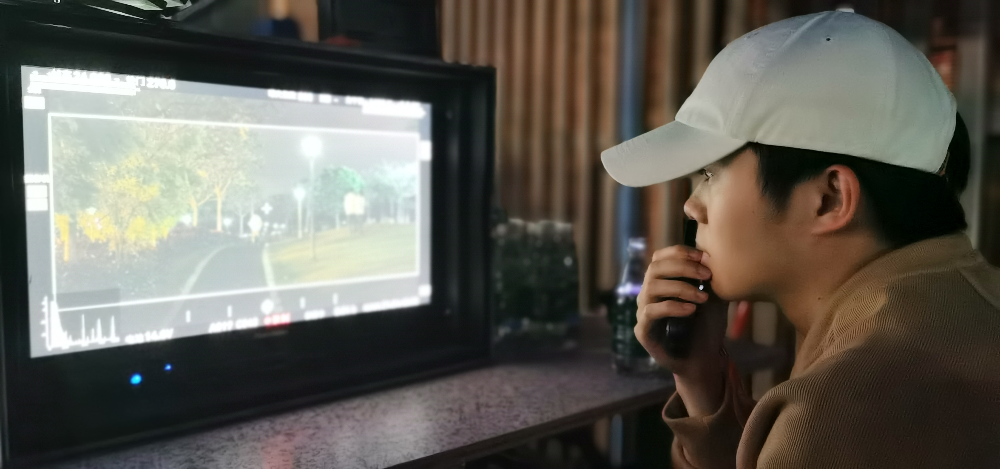
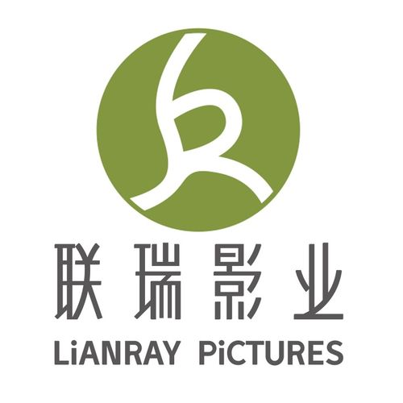
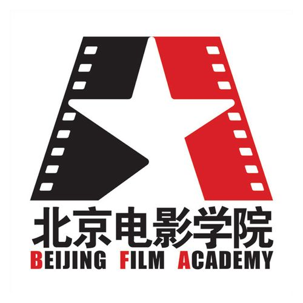
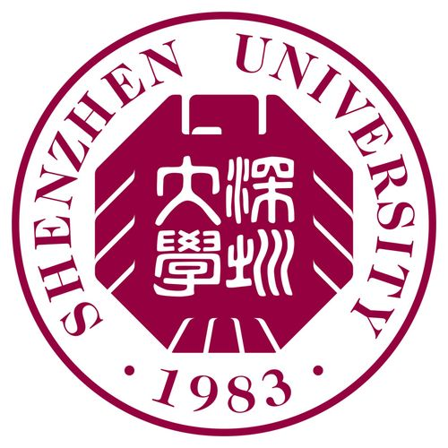

Film Director / Story Teller
先让故事有趣， 再让表达有声。
集合导演、编剧、制片与声音设计的创作者。
任时代变迁，技术更迭，我们还是需要故事，我还是想讲故事。
Director / Producer / Sound
Portfolio
作品集
Resume
简历
-

联瑞影业
CEO助理 / 项目制片
- 协助管理电影项目中剧本开发、落地拍摄、后期制作与营销发行（主要合作导演：韩延）。
- 制片项目：《星河入梦》《未来赞美诗》。
- 参与项目：《我们一起摇太阳》《我爱你！》《九龙城寨之围城》等。
- 主控项目：AI创作研究、搭建AI电影策划系统。
-

北京电影学院
电影声音创作
- 入选北京电影学院研究生拔尖人才实验班，通过两年三轮选拔获取最终创投资金，完成三部短片创作。
- 研究生毕业课题实验中录制的汽车引擎声素材于次年运用于电影《流浪地球2》声音制作中。
- 学位毕业作品《公交牌椰汁》于B站破百万播放。
-

深圳大学
广播电视编导
- 在学校与商业项目中掌握摄影、录音、剪辑、调色、混音基本功。
- 在实践中完成纪录片、剧情片、广告片、宣传片等各种影像类型探索。
- 传播学院直播小组组长，负责学校各种大型晚会的现场直播导演。
About
关于我
我把自己定义为一个讲故事的人，影像并不是故事的唯一载体，电影也不是影像的唯一媒介，我相信任何影像形式都可以产出优质内容。
“为什么这个故事要用视听语言来讲述”是我在每一个作品中首先需要弄清楚的问题，并不是每一个故事都值得被拍出来——画面、声音、表演总得有一样可以给故事加分。
希望你可以通过以上“我关注什么”更好地了解我，期待面对面的交流，找到志同道合的人一起产出优质内容。
16607620999